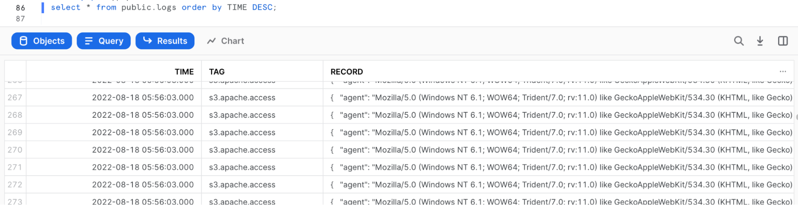
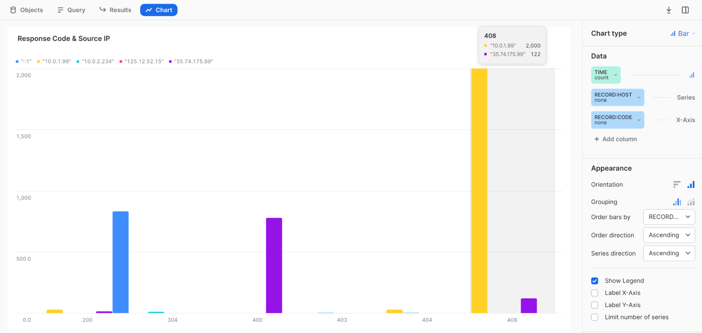

This Quickstart shows how to use Fluentd to send system event logs to Snowflake for use as a SIEM or for log analysis. We use Apache HTTP Server to generate access log files, which we upload as gzip files to an S3 external stage. Next, we set up Snowpipe to retrieve the gzip files from the external stage and import them into Snowflake. Finally we use Snowsight to visualize log events.
What is Fluentd?
Fluentd is open-source software that parses event logs, application logs, and clickstreams, converts the semi- or un-structured data to structured data, and stores the structured data in an S3 bucket. To learn more about Fluentd, see: https://www.fluentd.org/
What You'll Learn
- How to deploy Apache2 on a target server (Amazon Linux)
- How to deploy the Fluentd agent (td-agent) on a target server
- How to set up an external stage on Snowflake
- How to set up Snowpipe to retrieve data from the external stage
Prerequisites
Prior to starting you should:
- Create a Snowflake Account
- Configure AWS VPC settings, like subnet / security rules
- Deploy the bastion host on the AWS VPC
- Deploy the S3 bucket, create an IAM role, and get the access key and secret key
Fluentd + Snowflake Integration Architecture

After deploying Amazon Linux from the official AWS AMI, log in to Linux:
- Username: ec2-user
- Key-pair: Use the key-pair file that was created for this instance
Ensure that the security group configuration only has the necessary ports open.
Install Apache2, start the service, and set up auto-run:
sudo yum update
sudo yum -y install httpd
sudo systemctl start httpd.service
sudo systemctl enable httpd.service
Create a test web page:
sudo sh -c 'echo "hello world" > /var/www/html/index.html'
Open a browser and enter the target server's IP address in the address bar. You should see a page similar to the following with the text "hello world!!"

Run the following command to verify that the access log shows recent access:
sudo cat /var/log/httpd/access_log
Install Fluentd, start the service, and set up auto-run:
curl -L https://toolbelt.treasuredata.com/sh/install-amazon2-td-agent4.sh | sh
sudo systemctl start td-agent.service
Change the permissions for the httpd file and folder to allow Fluentd to retrieve access logs:
sudo chmod o+rx /var/log/httpd/
sudo chmod o+rx /var/log/httpd/*
Create a buffer folder to upload data to S3:
sudo mkdir /var/log/td-agent/s3
sudo chown td-agent:td-agent /var/log/td-agent/s3
Open the Fluentd configuration file:
sudo vi /etc/td-agent/td-agent.conf
Paste the following command into the file and update the S3 bucket information:
<source>
@type tail
path /var/log/httpd/access_log
pos_file /var/log/td-agent/apache2.access_log.pos
<parse>
@type apache2
</parse>
tag s3.apache.access
</source>
<match s3.*.*>
@type s3
aws_key_id [AWS Access Key]
aws_sec_key [AWS Secret key]
s3_bucket [S3 Bucket Name, Ex:masaya-s3-northeast-1-external-stage]
path logs/
<buffer>
@type file
path /var/log/td-agent/s3
timekey 60 # 1 min
timekey_wait 1m
chunk_limit_size 256m
</buffer>
time_slice_format %Y%m%d%H
</match>
Reboot Fluentd:
sudo service td-agent restart
Confirm that the Apache access logs were uploaded to S3 as gzip files. This may take a few minutes.

The data should look similar to the following (CSV, tabs are the delimiters): 
Use an IAM role that can retrieve data from S3 to create a storage integration. To get the STORAGE_AWS_ROLE_ARN, see Configuring Secure Access to Amazon S3 and complete the steps.
use role accountadmin;
create STORAGE INTEGRATION s3_int_fluentd
TYPE = EXTERNAL_STAGE
STORAGE_PROVIDER = S3
ENABLED = TRUE
STORAGE_AWS_ROLE_ARN = 'arn:aws:iam::xx:role/[RoleName]'
STORAGE_ALLOWED_LOCATIONS = ('s3://masaya-s3-northeast-1-external-stage/logs/')
;
DESC INTEGRATION s3_int_fluentd;

Create the external stage:
create stage fluentd_stage
url = 's3://[BUCKET_NAME]/logs/'
storage_integration = s3_int_fluentd
;
Verify that Snowflake can list S3 files:
list @fluentd_stage;

Create the file format (Fluentd's delimiter is the tab = \t):
create or replace file format fluentd_format
type = csv
field_delimiter = '\t'
compression=gzip
;
Create a table:
create table public.logs(
time DATETIME,
tag STRING,
record VARIANT
);
Test the injection from the external stage:
copy into public.logs
from @fluentd_stage
file_format = (format_name = fluentd_format);
Select the data:
select * from public.logs;

The parsed log should be stored as JSON in the "RECORD" column.
Configure Snowflake Snowpipe:
create pipe fluentd.public.mypipe auto_ingest=true as
copy into fluentd.public.logs
from @fluentd.public.fluentd_stage
file_format = fluentd.public.fluentd_format
;
Run show pipes to retrieve the SQS queue ARN:
show pipes;

Set up the S3 bucket by following these steps: Enabling and configuring event notifications using the Amazon S3 console. Choose Target Bucket > Open property. Select Create Event notification.

Complete the form:
- Name: Type a name for the event notification (e.g. Auto-ingest Snowflake)
- Prefix (Optional): Specify a Prefix value to only receive notifications when files are added to a specific folder (for example, logs/)
- Event types: Select the option for ObjectCreate (All)
- Send to: Select SQS Queue
- SQS: Select Add SQS queue ARN
- SQS queue ARN: Paste the SQS queue name from the SHOW PIPES output

The event notification has been created:

Refresh Snowpipe to retrieve any unloaded files, then un the select command to load unloaded data:
alter pipe mypipe refresh;
select * from public.logs;
After awhile, data may be injected automatically:
select * from public.logs order by TIME DESC;

To verify that Snowpipe worked properly, run the following:
use role accountadmin;
select *
from table(snowflake.information_schema.pipe_usage_history(
date_range_start=>dateadd('day',-14,current_date()),
date_range_end=>current_date(),
pipe_name=>'fluentd.public.mypipe'));

Since parsed logs are stored as JSON in the RECORD column, you can set up Snowsight to visualize log events.
Example 1: To make a Snowsight dashboard, copy and paste the following code:
SELECT
time,
RECORD:agent,
RECORD:code,
RECORD:host,
RECORD:method,
RECORD:path,
RECORD:referer,
RECORD:size,
RECORD:user
FROM
fluentd.public.logs
WHERE time > (select dateadd(day, -1, getdate()));
;
Example 2: TIME count = Bar, TIME none = X-Axis
Web Server Access History per Hour 
Example 3: TIME count = Bar, RECORD:HOST none = X-Axis Source IP List

Example 4: TIME count = Bar, RECORD:HOST none = Series, RECORD:CODE none = X-Axis Response Code & Source IP
Example 5: Code 408 is connection time out = maybe DDOS or CPU shortage.

Congratulations! You learned how to configure Fluentd to send system event logs to Snowflake, and how to use Snowsight to visualize log events! Consolidating log files in Snowflake makes it possible to develop a single dashboard to monitor security activity across your network.
What You Learned
- How to deploy td-agent (the Fluentd Agent) on the target server
- How to configure Snowpipe to retrieve data from the S3 external stage and import it into Snowflake
- How to configure Snowsight to visualize log events